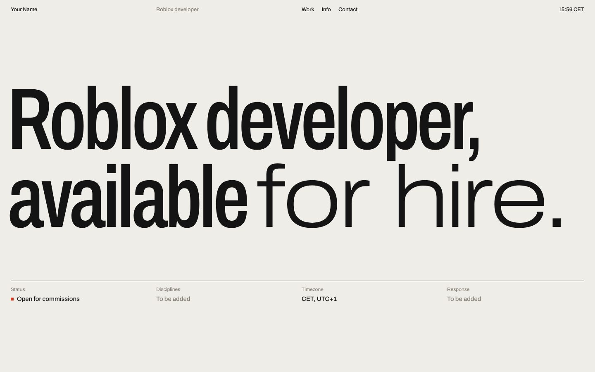
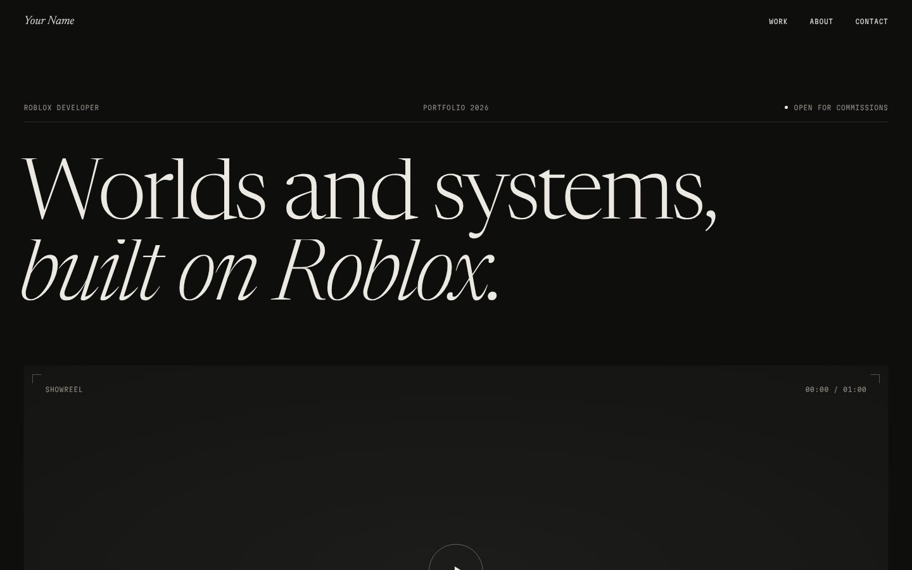
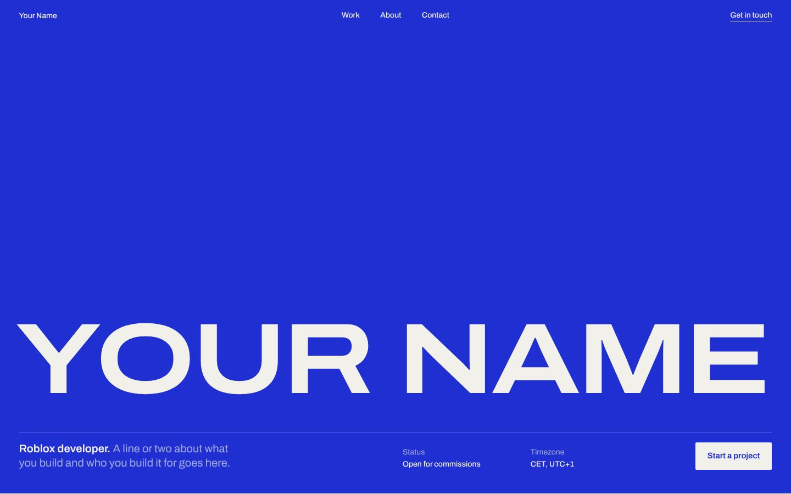

Licht en redactioneel. Smalle grotesk, strak grid, werk als index waarbij een preview met de muis meeloopt.

Donker en filmisch. Serif met cursief, showreel bovenaan, grote beeldvlakken voor renders en gameplay.

Eén inktkleur op warm papier. Je naam groot en breed, projecten als kaarten, cijfers als visits prominent.